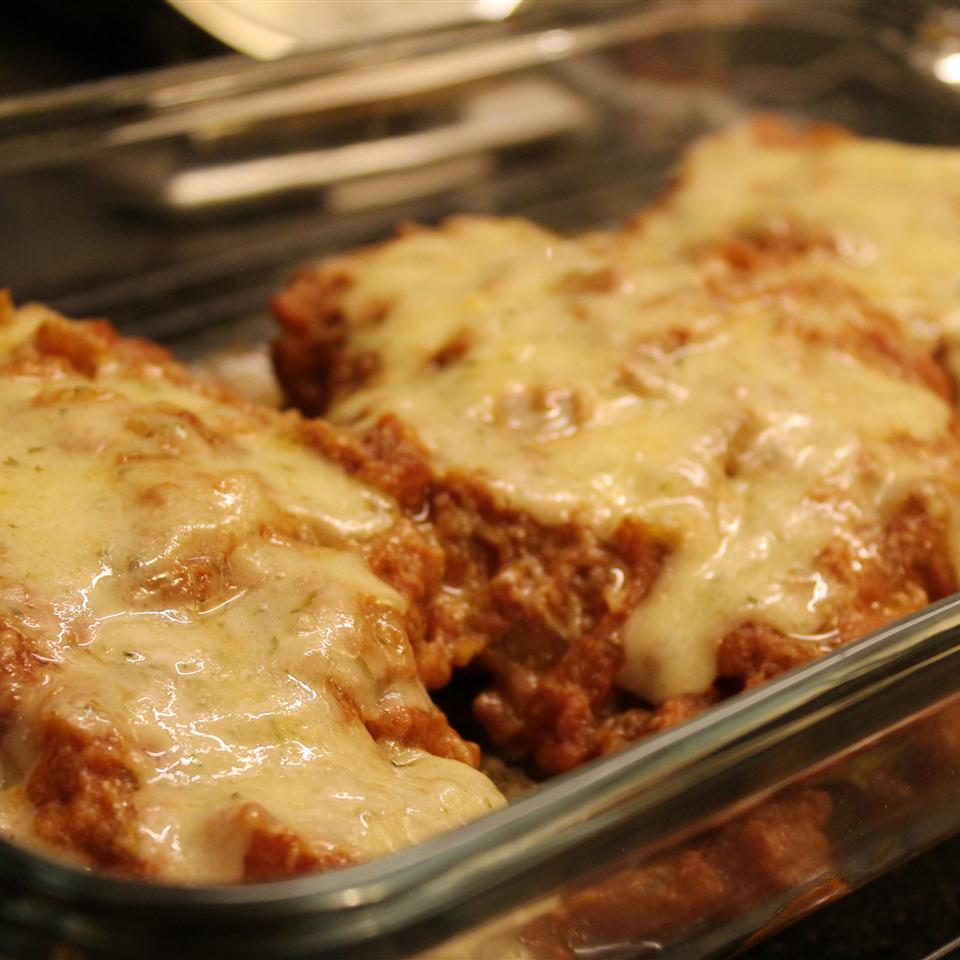

Homemade Chicken Parmigiana

Description
"I received this recipe several years ago from a family member who swore it was a great romantic meal. She was right. My husband asks me to make this meal every time we have a date night. The quantity of ingredients look intimidating, but don't let them fool you. It's easy and delicious! The whipping cream gives it a creamy texture that you just can't get enough of!"
Chicken parmigiana recipe from allrecipes. This recipe was created by Jules203.
Ingredients
- 1 tablespoon butter
- 1 teaspoon minced garlic
- ⅓ cup minced onion
- 1 14.5 oz can diced tomatoes with juice
- ½ teaspoon sugar
- ¼ cup heavy cream
- salt and pepper to taste
- ⅓ cup fine dry bread crumbs
- 2 tablespoons freshly grated Parmesan cheese
- ½ teaspoon dried oregano
- 1 egg, beaten
- 2 tablespoons milk
- 3 5 oz skinless, boneless chicken breast halves
- 3 tablespoons olive oil
- ¾ cup shredded Mozzarella cheese
- 1 tablespoon freshly grated Parmesan cheese
Steps
- Melt butter in a saucepan over medium heat. Stir in garlic and onion, and cook until the onion has softened and turned translucent, about 2 minutes. Pour in diced tomatoes and sugar. Increase heat to medium-high, and bring to a simmer, then reduce heat to medium-low, and continue simmering for 10 minutes, stirring occasionally. Once the sauce has simmered, stir in the cream and season to taste with salt and pepper. Simmer for an additional 3 minutes. Lower heat and keep sauce warm.
- Stir together bread crumbs, 2 tablespoons Parmesan cheese, and dried oregano; set aside. In a small bowl, whisk together egg and 2 tablespoons milk until blended. Dip chicken breasts into the egg, then press into breadcrumb mixture to coat both sides, shaking off excess.
- Heat olive oil in a large skillet over medium heat. Add chicken breasts and cook on both sides until they reach an internal temperature of 160 degrees F (70 degrees C), and the bread crumb crust is golden brown, about 10 minutes.
- To serve, spoon sauce over chicken and top with Mozzarella and Parmesan cheeses. Let stand a few minutes until the cheese has melted from the heat of the sauce.